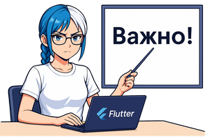
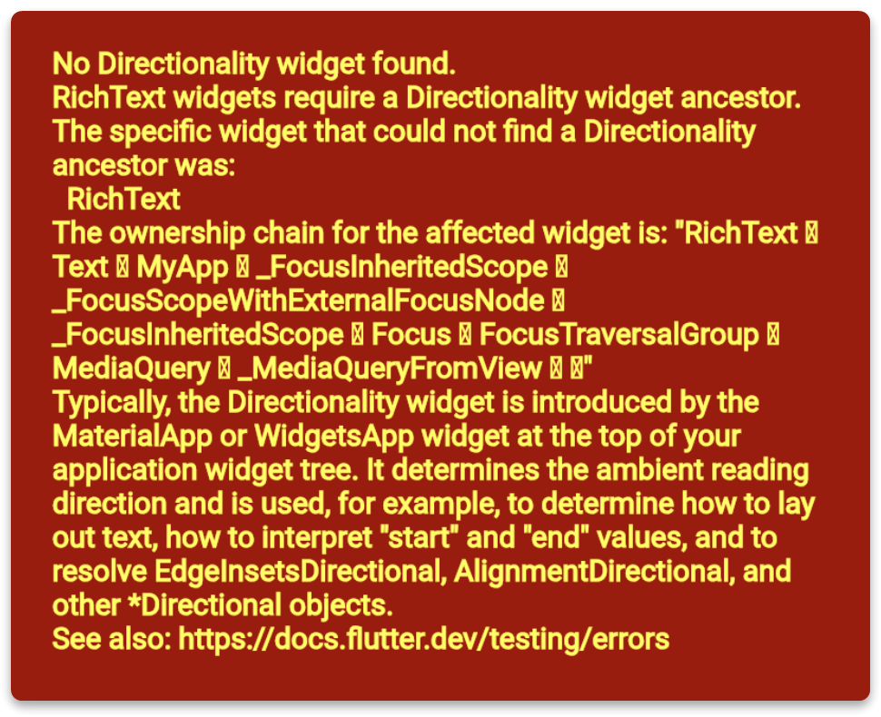
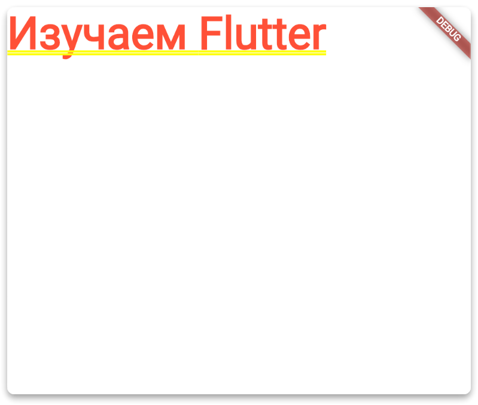
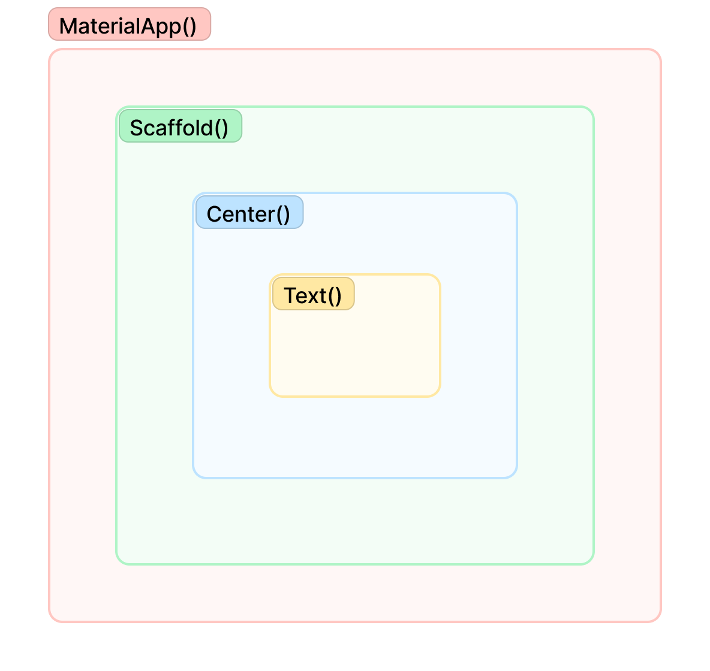
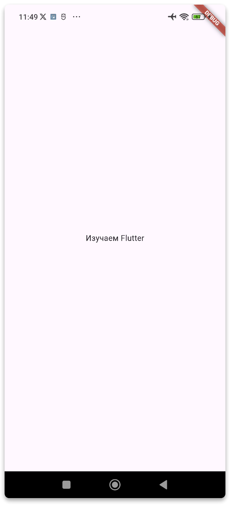
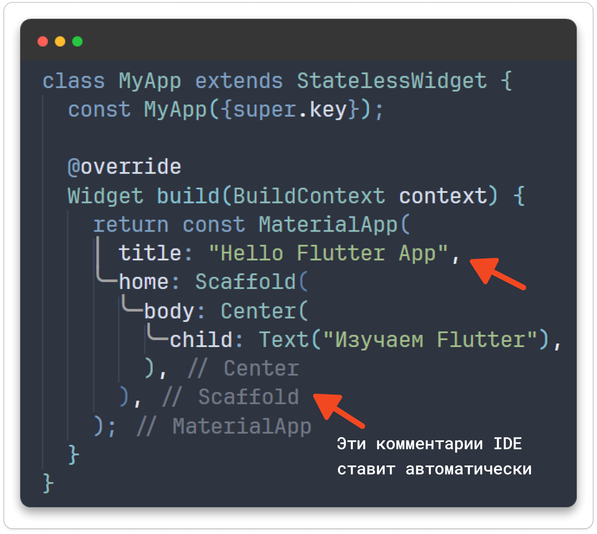
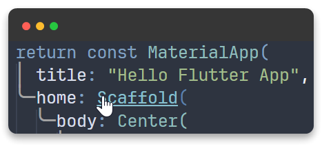

Виджеты. Что это?
 Виджеты. Что это?
Виджеты. Что это?
➡️ Скачать презентацию. Flutter Что такое Виджет
Что такое Widget
Читайте все комментарии внутри блоков с кодом
Начнём с изучения самого главного структурного элемента это фреймворка, с кирпичика из которого всё здесь создается с виджета.
Виджет Widget - это отдельный компонент, который может быть отрисован на экране.
Во Flutter почти ВСЁ является виджетом
- Изображения, иконки, текст, которые видно в приложении Flutter, это виджеты.
- Невидимые элементы тоже виджеты, например, строки, столбцы и сетки, которые упорядочивают, ограничивают и выравнивают видимые виджеты.
Переходим в файл main.dart и беспощадно удаляем все содержимое. Будем писать весь код с нуля руками, чтобы прочувствовать основные концепции этого фреймворка и привыкнуть к языку программирования Dart
Импорт Material библиотеки


// В самом начале обязательно делаем этот импорт
// material.dart нужен для работы с UI в стиле material
import 'package:flutter/material.dart';
Material Design
Дизайн
Flutter приложения, можно разработать в любом стиле, хоть всё придумать с полного нуля, и это реально круто. Но проще и эффективней с самого начала использовать готовые библиотеки для создания интерфейса.

Во Flutter по умолчанию есть два варианта создания дизайна:
- В стиле
Material Design(обычно это андройд устройства) - В стиле
Cupertino(обычно это яблочные устройства)
Но ничто и никто нам не мешает, взять за основу, например, Material Design и слепить из него что-то своё :)
Функция main() - точка входа
import 'package:flutter/material.dart';
// Функция main() - самая главная функция! Входная точка!
// С этой функции начинается запуск Flutter приложения!
void main() {
runApp(); // Запускает и показывает виджет который сюда нужно передать
}
Создание своего первого виджета
Виджет это обычный класс в языке программирования Dart
Но чтобы он стал настоящим Виджетом и смог отображать UI приложения, его необходимо наследовать от одного из двух классов:
StatelessWidget(не управляет состоянием приложения)StatefulWidget(управляет состоянием приложения)
- Создадим
StatelessWidgetи назовём егоMyApp - Не забываем
MyAppпередать внутри функцииrunApp()
Создание виджета MyApp
import 'package:flutter/material.dart';
void main() {
runApp(MyApp()); // Передаем сюда виджет MyApp()
}
// Создание своего виджета
class MyApp extends StatelessWidget { // Наследуемся от StatelessWidget
const MyApp({super.key});
// Метод build() - отрисовывает/выстраивает интерфейс виджета на экране
@override
Widget build(BuildContext context) {
return const Text("Изучаем Flutter"); // Text() готовый виджет
}
}
Если сейчас запустить приложение то будет следующая ошибка:

Что означает ошибка: Эта ошибка возникает, когда в дереве виджетов отсутствует виджет Directionality, который необходим для работы RichText и других виджетов, зависящих от направления текста. Виджет Directionality отвечает за указание направления текста (например, слева направо или справа налево)
Как исправить: Чтобы исправить эту ошибку, убедитесь, что ваш виджет RichText находится внутри виджета, который предоставляет контекст направления текста, такого как MaterialApp.
MaterialApp
В данном случае, наше приложение не понимает как правильно отрисовывать текст на экране (и любой другой элемент интерфейса).
Для этого нужно самое начало приложения, самый верх иерархии виджетов обернуть в виджет MaterialApp()
Этот виджет стал доступен, когда мы импортировали библиотеку
import 'package:flutter/material.dart';
Использование MaterialApp
import 'package:flutter/material.dart';
void main() {
runApp(MyApp());
}
class MyApp extends StatelessWidget {
const MyApp({super.key});
@override
Widget build(BuildContext context) {
return MaterialApp(
title: "Hello Flutter App",
home: const Text("Изучаем Flutter"),
);
}
}
Запускаем приложение на выполнение, ошибки нет, появился текст, но все какое-то страшное: красные буквы, да еще и подчеркнуты желтым …

Scaffold()
В данном случае для правильного и красивого дизайна нужен определенный каркас. Такая штука называется виджет Scaffold().
Передадим виджет Scaffold() параметру home у виджета MaterialApp()
Виджет Text() теперь находится внутри виджета Scaffold(), а виджет Scaffold() в свою очередь находится внутри виджета MaterialApp(), и всё это внутри нашего виджета который мы сами создали под названием MyApp()

Добавление Scaffold
import 'package:flutter/material.dart';
void main() {
runApp(MyApp());
}
class MyApp extends StatelessWidget {
const MyApp({super.key});
@override
Widget build(BuildContext context) {
return MaterialApp(
title: "Hello Flutter App",
home: Scaffold(
body: const Text("Изучаем Flutter"),
),
);
}
}
Еще дополнительно обернем виджет Text() в виджет Center() чтобы выровнять его по центру экрана.
Центрирование текста
import 'package:flutter/material.dart';
void main() {
runApp(MyApp());
}
class MyApp extends StatelessWidget {
const MyApp({super.key});
@override
Widget build(BuildContext context) {
return MaterialApp(
title: "Hello Flutter App",
home: Scaffold(
body: Center(
child: const Text("Изучаем Flutter"),
),
),
);
}
}
Теперь приложение отображается нормально

Виджеты. Что это?
➡️ Скачать презентацию. Flutter Что такое Виджет
Декларативный стиль разработки
Можно заметить, что построение интерфейса во Flutter состоит из множества виджетов вложенных друг в друга.
Виджет это обычный Dart класс который в качестве именованных параметров параметров может принимать другие виджеты (Dart классы)
Такой подход очень напоминает верстку сайтов с помощью HTML и CSS, только вместо виджетов, там теги вкладываются в другие теги.
Аналогия с HTML
<body>
<div>
<p>
Привет HTML <a href="http://flutter.dev">Изучаем Flutter</a>
</p>
</div>
</body>
Существует два стиля разработки
1. Императивный
2. Декларативный
Императивный стиль разработки
При императивной разработке указывается ЧТО СДЕЛАТЬ
Отдаётся прямая команда (приказ) :
Создай кнопку, установи размер 200, установи цвет зеленый
Императивный подход (Kotlin)
val myButton: Button = findViewById(R.id.myButton)
myButton.width = 200
myButton.setBackgroundColor(getColor(R.color.button_color)
Декларативный стиль разработки
При декларативной разработке указывается КАК СДЕЛАТЬ
Пишем то, как бы мы хотели увидеть интерфейс:
Здесь будет кнопка зеленого цвета и размером 200
Декларативный подход (Flutter)
ElevatedButton(
style: ElevatedButton.styleFrom(
backgroundColor: Colors.green, // Цвет кнопки
fixedSize: Size(200, 50), // Размер кнопки: ширина 200, высота 50
)
)
- Во Flutter создание графического интерфейса UI встроен в код
Виджетыявляются основнымистроительными блокамипользовательского интерфейса- Создавать UI во Flutter - это
компоновать виджеты, т.е. комбинировать существующие и свои виджеты для создания более сложных виджетов, образуя в итоге дерево виджетов. - Готовых виджетов существует очень много и почти на все случаи жизни.
Особенности разработки. Ключевые моменты
Виджет это обычный Dart класс который в качестве именованных параметров параметров может принимать другие виджеты.
Например, виджет Center в параметр child принимает другой виджет Text()
Пример вложения виджетов
Center(
child: Text("Изучаем Flutter")
)
Cразу стоит запомнить child children body home
- Чтобы вложить
один виджетв другой, нужно использовать параметрchild - Чтобы вложить
коллекцию виджетов, используем параметрchildren - Чтобы вложить виджет в
Scaffold, нужно использовать параметрbody - Чтобы вложить виджет в
MaterialApp, нужно использовать параметрhome
Крайне рекомендуется, в конце каждого параметра ставить запятую, для правильного форматирования вложенности виджетов.
Запятая в конце параметра позволяет:
- красиво форматировать код
- IDE автоматически будет указывать на то, где закрылся нужный виджет

У каждого виджета должен быть метод build(), который отрисывывает виджет на экране устройства, выстраивает UI приложения. Это основной и обязательный метод у виджета.
@override
Widget build(BuildContext context) { }
Параметр BuildContext context – это крайне важная информация для фреймворка о местоположении текущего виджета.
BuildContext context определяет, где находится виджет в дереве виджетов, и служит проводником для связи между другими виджетами.
Что такое ключи в const MyApp({super.key})
key — это специальный параметр, который используется Flutter для идентификации виджетов и управления их состоянием при перестроении дерева виджетов.
Он играет важную роль при изменении порядка или замене виджетов, чтобы Flutter мог правильно сопоставить старые и новые виджеты.
Flutter это Open Source
Стоит сделать акцент на то, что Flutter это Open Source проект, можно залезть во внутренности движка, изучить код, а также посмотреть на комментарии и доступные свойства и методы.
Допустим, нужно посмотреть какие еще есть свойства у меня виджета Scaffold.
Для этого в редакторе кода нажимаем клавишу ctrl и наводим курсор на название виджета, появляется палец и виджет выделяется другим цветом с подчеркиванием. Кликаем на него и проваливаемся к описанию этого класса.

И шикарная документация на официальном сайте Flutter documentation | Flutter
 Git + GitFlic
Git + GitFlic
Делаем commit и push
Сcылка на репозиторий с кодом урока ➡️ https://gitflic.ru/project/igarett/course_2025